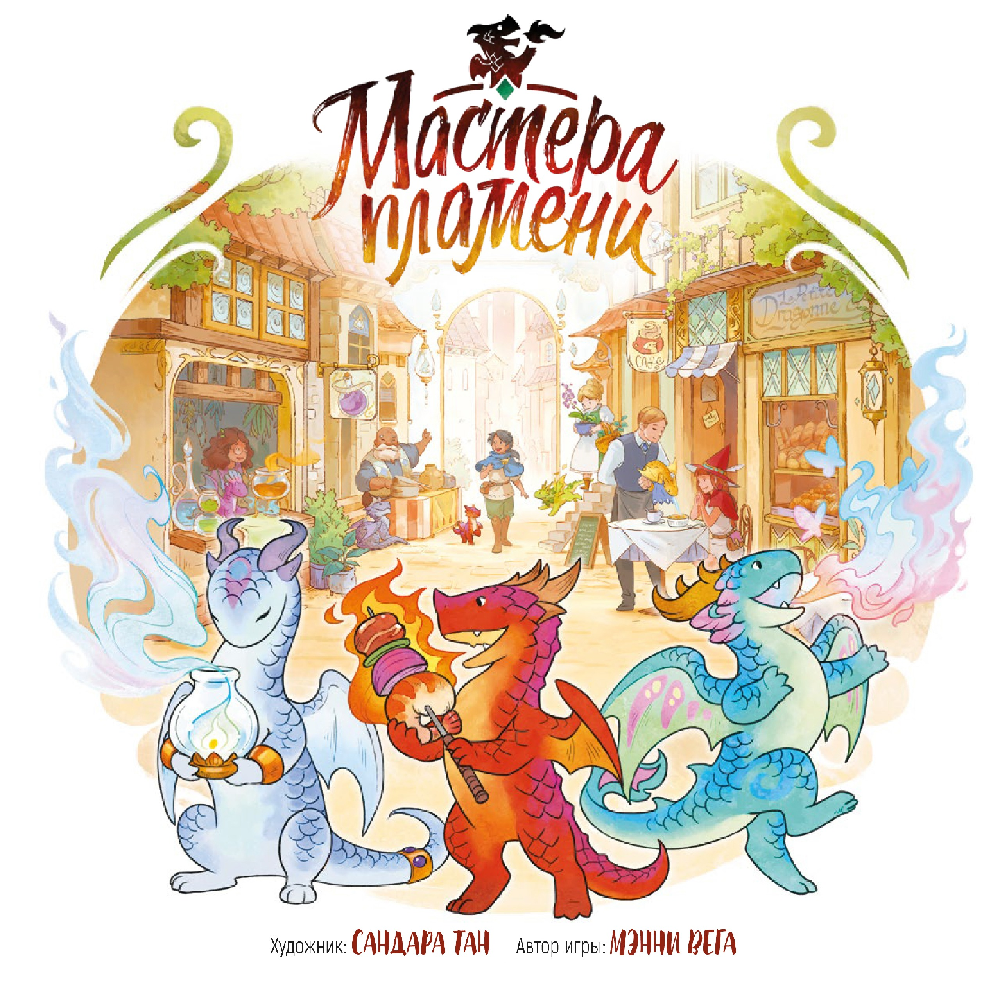
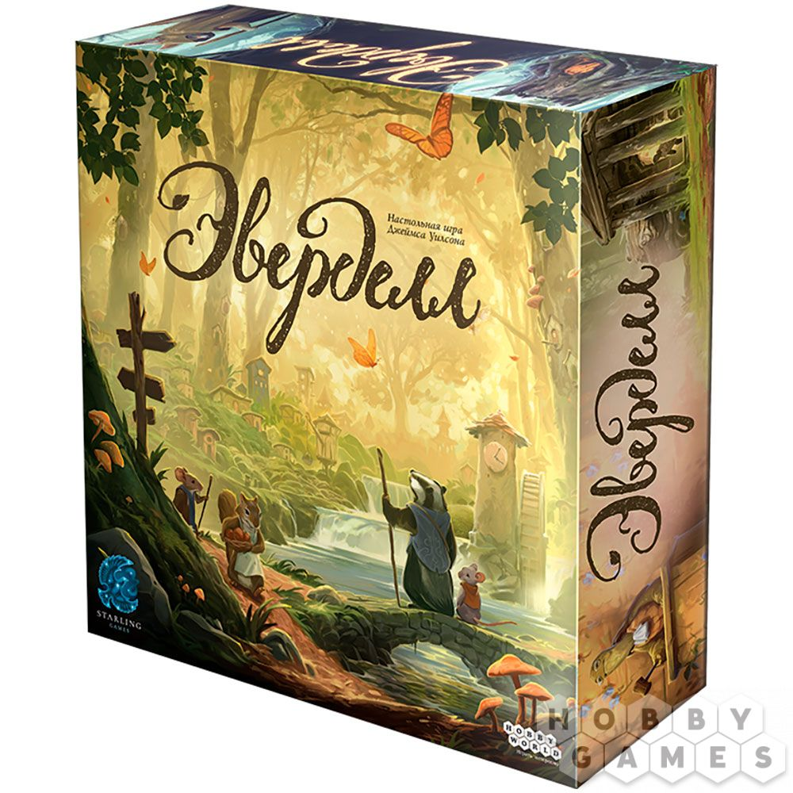
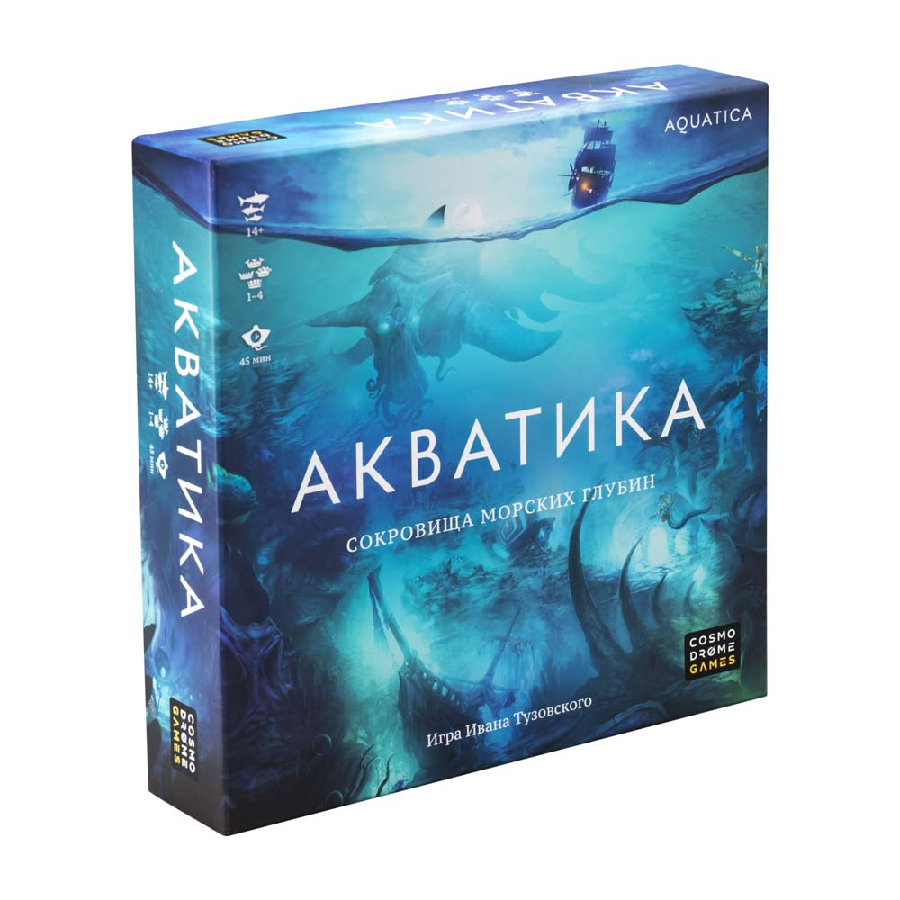

Привет, это сайт о настольных играх

Мастера пламени

Эверделл

Акватика
История
История настольных игр насчитывает не менее 7500 лет. В современных исследованиях высказывается мнение, что история этих игр была общей. Так, Дэвид Парлетт, автор «Оксфордской истории настольных игр», считает, что все, даже самые современные настольные игры имеют древнейшие прототипы и, следовательно, общие корни.[2] Происхождение наиболее древних известных сегодня настольных игр прослеживается из «плодородного полумесяца», Китая и Индии.
Интересные
Настольные игры, в отличие от компьютерных и мобильных игр, лучше прорабатывают, поэтому практически каждая игра очень интересная
С друзьями
В настольные игры хорошо играть для общения в кампании друзей
В выходной
В настольные игры иожно собраться поиграть в праздники и выходные дни